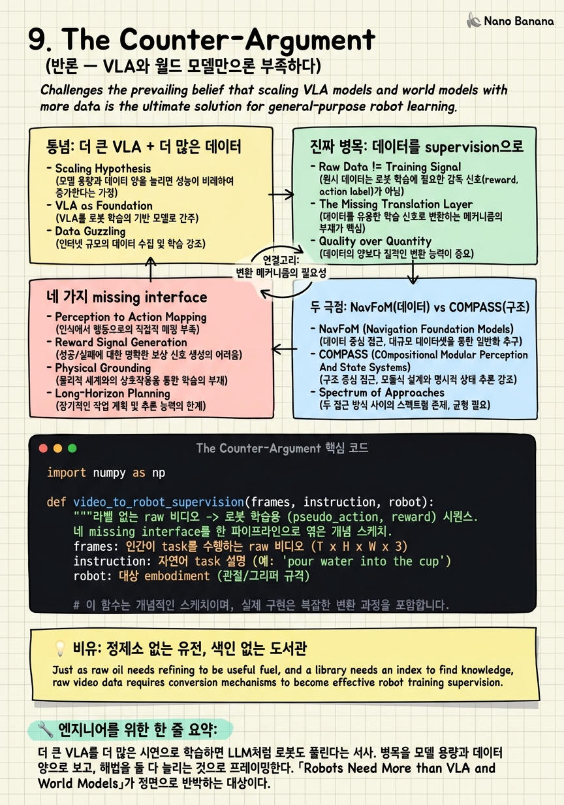

The Counter-Argument

🎯 학습 목표
- '더 큰 VLA + 더 많은 데이터'가 왜 병목이 아닐 수 있는지 논증을 재구성할 수 있다
- 네 가지 missing interface를 각각 설명할 수 있다
- NavFoM(802만 샘플)의 데이터 스케일링 접근과 COMPASS의 구조적 접근을 대비할 수 있다
- GR00T의 하이브리드 설계가 이 반론과 어떻게 맞닿는지 안다
- 연구 프런티어로서 supervision 변환 문제의 중요성을 안다
지금까지 이 코스는 GR00T를 '하이브리드'로 읽어왔다 — world model(뇌)과 policy(정책), 데이터 스케일과 구조적 분리 사이의 절충. 이 챕터는 잠시 그 논제 밖으로 나가, GR00T를 포함한 대형 VLA 진영 전체를 겨냥한 학계의 정면 반론을 다룬다. 반론의 표적은 지난 2년간 로봇 학습을 지배해 온 통념 하나다: '더 큰 VLA를 더 많은 시연으로 학습하면 로봇은 결국 풀린다'는 정책 스케일링(policy scaling) 신념.
반론의 출처는 2026년 6월 arXiv에 올라온 논문 「Robots Need More than VLA and World Models」다. 저자진에는 Mac Schwager, Arash Ajoudani, Cesar Cadena, Jan Peters, Marco Hutter 등 로보틱스 학계의 무게추가 대거 이름을 올렸다. 이들의 주장은 도발적이면서 정밀하다 — 진짜 병목은 모델 크기가 아니다. 병목은 세상에 넘쳐나는 비정형 행동 데이터를 로봇이 쓸 수 있는 supervision으로 변환하는 '인터페이스'의 부재다. 인간 동작, 인터넷 비디오, 시뮬레이션 rollout, 인터랙티브 시연은 task·목표·접촉·실패·물리적 제약에 관한 풍부한 정보를 담고 있지만, embodiment별 action label도 task semantics도 reward 구조도 없어서 로봇 정책이 직접 소화하지 못한다.
그래서 이 챕터는 다섯 갈래로 나아간다. 먼저 정책 스케일링 통념이 정확히 무엇을 약속하는지, 다음으로 반론이 지목하는 진짜 병목('데이터→supervision 변환')이 왜 모델 크기와 다른 문제인지, 그다음 논문이 제시하는 네 가지 missing interface(data·embodiment·world-model·reward)를 하나씩 해부한다. 이어 이 논쟁을 두 극점으로 좌표화한다 — 데이터 극점의 NavFoM(802만 샘플 cross-embodiment navigation FM)과 구조 극점의 COMPASS(구조적 분리). 마지막으로, 반론이 겨냥한 전장이 사실 GR00T가 이미 하고 있는 일(autolabel/retarget 파이프라인)과 정확히 같은 곳임을 보이며, GR00T의 하이브리드 설계가 왜 우연이 아닌지로 챕터를 닫는다.
핵심 내용
통념: 더 큰 VLA + 더 많은 데이터
먼저 반론이 무엇을 때리는지부터 명확히 하자. 표적은 지난 2년간 로봇 학습을 사실상 지배해 온 하나의 서사다 — 로봇 문제는 결국 스케일링 문제라는 믿음이다. 이 믿음을 한 문장으로 압축하면 이렇다: 충분히 큰 Vision-Language-Action(VLA) 모델을 충분히 많은 로봇 시연으로 학습하면, LLM이 언어를 풀었듯 로봇도 풀린다.
이 서사가 강력했던 이유는 명백하다. Language와 vision에서 scaling law가 반복적으로 작동했기 때문이다. 파라미터를 키우고 데이터를 늘리면 성능이 예측 가능하게 좋아졌고, 창발적 능력까지 튀어나왔다. 그래서 로보틱스 진영은 자연스러운 유추를 했다 — VLA도 같은 곡선을 탈 것이다. 남은 일은 (1) 모델을 키우고 (2) 시연 데이터를 더 모으는 것뿐이라는 결론이다. 실제로 대형 텔레오퍼레이션 데이터 수집, 로봇 데이터 pooling, 수십억 파라미터 VLA가 이 논리 위에서 추진되었다.
이 관점에서 로봇 학습은 본질적으로 정책 스케일링(policy scaling) 문제로 프레이밍된다. 즉 '어떻게 하면 더 큰 정책을, 더 많은 (관측, 행동) 쌍으로 학습시킬까'가 중심 질문이 된다. 병목은 모델 용량과 데이터 양이고, 해법은 둘 다 늘리는 것이다. 이 프레임 안에서 데이터의 '종류'는 부차적이다 — 결국 (obs, action) 쌍으로 환원되면 되니까.
반론의 핵심은 바로 이 프레이밍이 틀렸다는 것이다. 논문의 제목 「Robots Need More than VLA and World Models」자체가 선언이다 — 로봇에게는 VLA와 world model '이상'의 무언가가 필요하다. 더 큰 정책도, 심지어 더 나은 world model도, 그 자체로는 로봇을 풀지 못한다. 왜냐하면 병목이 애초에 정책 쪽에 있지 않기 때문이다. 다음 섹션에서 반론이 지목하는 진짜 병목으로 넘어간다.
진짜 병목: 데이터를 supervision으로
반론의 심장은 한 문장에 응축되어 있다. 논문은 로봇 학습의 진짜 병목을 이렇게 규정한다.
the absence of mechanisms that convert the world's abundant unstructured behavioural data into grounded robot supervision.
풀이하면: 진짜 병목은 세상에 넘쳐나는 비정형 행동 데이터(unstructured behavioural data)를 접지된 로봇 supervision(grounded robot supervision)으로 변환하는 메커니즘의 부재다. 문장을 뜯어보면 방점이 세 곳에 찍힌다 — abundant(데이터는 이미 넘쳐난다), unstructured(그런데 비정형이다), absence of mechanisms(그것을 supervision으로 바꾸는 장치가 없다).
이 진단이 통념을 정확히 뒤집는 방식을 보자. 통념은 '데이터가 부족하다 → 더 모으자'였다. 반론은 '데이터는 이미 넘친다 → 다만 쓸 수 있는 형태가 아니다'라고 말한다. 문제는 양(quantity)이 아니라 변환(conversion)이다. 인간 동작, 인터넷 비디오, 시뮬레이션 rollout에는 로봇이 배워야 할 거의 모든 것이 들어 있다. 부족한 건 정보가 아니라, 그 정보를 로봇 정책이 소화할 수 있는 형태로 옮기는 파이프라인이다.
논문은 왜 이 데이터들이 '직접 쓸 수 없는지'를 구체적으로 짚는다.
Human motion, internet video, simulation rollouts, and interactive demonstrations contain rich information about tasks, goals, contacts, failures, and physical constraints, yet most of this information is not directly usable by robot policies because it lacks embodiment-specific action labels, task semantics, and reward structure.
풀이: 인간 동작·인터넷 비디오·시뮬레이션 rollout·인터랙티브 시연은 task·목표·접촉(contact)·실패(failure)·물리적 제약에 관한 풍부한 정보를 담고 있지만, 이 정보의 대부분은 로봇 정책이 직접 쓸 수 없다 — 왜냐하면 embodiment별 action label, task semantics, reward 구조가 빠져 있기 때문이다. 세 가지 결핍이 정확히 지목된다. (1) 이 비디오 속 손은 로봇 관절이 아니므로 로봇의 action label이 없다. (2) '무엇을 하는 중인지'라는 task 의미가 붙어 있지 않다. (3) '잘하고 있는지'를 알려주는 reward 신호가 없다.
결론은 프레임 전환이다. 로봇 학습을 '더 큰 정책 학습' 문제가 아니라 '비정형 데이터를 supervision으로 변환하는' 인터페이스 문제로 다시 정의해야 한다. 정책을 아무리 키워도, 먹일 supervision이 없으면 굶는다. 병목은 모델의 입이 아니라, 세상의 음식을 소화 가능한 형태로 조리하는 주방에 있다. 다음 섹션에서 그 주방을 구성하는 네 개의 인터페이스를 본다.
네 가지 missing interface
논문은 '변환 메커니즘의 부재'를 추상적 구호로 남기지 않고, 정확히 네 개의 빠진 인터페이스(missing interface)로 분해한다. 각 인터페이스는 앞 섹션에서 지목한 세 결핍(action label·task semantics·reward)을 서로 다른 각도에서 메운다. 네 개를 나란히 놓으면 반론이 요구하는 '주방'의 설계도가 드러난다.
(1) Data interface — 비정형 행동을 autolabel한다. 인터넷 비디오나 인간 동작 같은 raw·unstructured 데이터에 로봇이 쓸 수 있는 구조(무엇을 하는 중인지, 어떤 객체·접촉이 관여하는지)를 자동으로 붙이는 층이다. 핵심 동사는 autolabel — 사람이 일일이 라벨링하는 게 아니라, 넘쳐나는 데이터를 자동으로 구조화해 supervision 후보로 만든다. 통념이 '데이터를 더 모으자'였다면, data interface는 '이미 있는 데이터를 라벨로 바꾸자'다.
(2) Embodiment interface — human motion을 robot action으로 retarget한다. 비디오 속 사람의 손·팔 궤적은 로봇의 관절·그리퍼와 물리적으로 다르다. embodiment interface는 human motion을 특정 로봇의 action space로 옮기는(retarget) 변환기다. 이것이 앞서 말한 'embodiment-specific action label이 없다'는 결핍을 정면으로 메운다. 인간의 동작을 로봇의 몸으로 번역하는 층이다.
(3) World-model interface — physics-grounded 3D reasoning을 제공한다. 비디오는 2D 픽셀의 흐름일 뿐, 그 안의 물리(무게·접촉력·안정성·3D 기하)는 명시되어 있지 않다. world-model interface는 관측을 physics-grounded 3D 표현으로 끌어올려, '이렇게 하면 물리적으로 무슨 일이 벌어지는지'를 추론 가능하게 만든다. 데이터 속에 암묵적으로 담긴 물리적 제약(physical constraint)을 명시적 신호로 승격시키는 층이다.
(4) Reward interface — video·language에서 task progress를 추론한다. raw 데이터에는 '얼마나 잘했는가'라는 reward가 붙어 있지 않다. reward interface는 비디오와 언어로부터 task progress(과제 진행도)를 추론해, 라벨 없는 시연에서도 학습 신호를 뽑아낸다. '컵이 손에 잡혔다', '물이 쏟아졌다(실패)' 같은 진행·실패 신호를 영상·언어에서 읽어내 reward 구조를 복원한다.
네 인터페이스의 공통 구조를 놓치지 말자. 모두 '비정형 입력 → 로봇이 쓸 수 있는 supervision' 이라는 같은 변환을 서로 다른 축에서 수행한다. data는 구조/라벨을, embodiment는 action을, world-model은 물리/3D를, reward는 학습 신호를 채운다. 이 넷이 갖춰져야 비로소 넘쳐나는 데이터가 정책을 먹일 supervision이 된다. 반론이 말하는 'VLA와 world model 이상의 것'이 바로 이 네 인터페이스다 — 정책도 world model도 이 변환의 소비자일 뿐, 변환 그 자체는 아니다.
두 극점: NavFoM(데이터) vs COMPASS(구조)
이 논쟁을 지도 위에 놓으면 하나의 스펙트럼이 그려진다. 한쪽 끝에는 '데이터와 스케일이 답'이라는 극점이, 반대쪽 끝에는 '구조적 분리가 답'이라는 극점이 있다. 두 실제 시스템이 이 양 극단을 선명하게 대표한다 — 데이터 극점의 NavFoM과 구조 극점의 COMPASS다.
데이터 극점: NavFoM. 2025년 9월 PKU-EPIC이 공개한 NavFoM(Navigation Foundation Model)은 정책 스케일링 서사를 가장 순수하게 밀어붙인 사례다. 802만 샘플 규모의 cross-embodiment(quadruped·drone·wheeled·car) × cross-task(VLN, object search, target tracking, autonomous driving) navigation 데이터로 하나의 foundation model을 학습했다. 서로 다른 카메라 구성과 시간 지평은 identifier token으로 처리하고, task-specific finetuning 없이 여러 벤치마크에서 SOTA를 달성한다. 효율성도 실전적이다 — 1600-token 예산 안에서 8-waypoint 궤적을 0.5초에 뽑는다. NavFoM의 메시지는 명확하다: 충분히 다양하고 방대한 데이터를 하나의 큰 모델에 부으면, 별도 구조 없이도 cross-embodiment 일반화가 창발한다.
구조 극점: COMPASS. 반대편 끝에는 COMPASS가 있다. COMPASS는 cross-embodiment mobility를 하나의 거대 모델로 삼키는 대신, 구조적 분리(structural separation) 로 접근한다 — 지각·계획·제어, 혹은 공통 표현과 embodiment별 어댑터를 명시적으로 분리하고, 각 층을 특화한다. 여기서 일반화는 데이터의 양이 아니라 아키텍처의 모듈성에서 나온다. COMPASS의 메시지는 NavFoM의 정반대다: 데이터를 무작정 붓는 대신 구조를 잘 나누면, 더 적은 데이터로도 새 embodiment에 옮겨갈 수 있다.
두 극점을 나란히 놓으면 이 챕터의 논쟁 축이 표로 응축된다.
| 구분 | NavFoM (데이터 극점) | COMPASS (구조 극점) |
|---|---|---|
| 핵심 베팅 | 데이터 규모 + 단일 대형 FM | 구조적 분리 + 모듈 특화 |
| 일반화의 원천 | 802만 cross-embodiment 샘플 | 아키텍처 모듈성 |
| cross-embodiment 처리 | identifier token으로 흡수 | embodiment별 어댑터로 분리 |
| finetuning | task-specific finetuning 불필요 | 층/어댑터 단위 특화 |
| 통념과의 관계 | 정책 스케일링 통념의 화신 | 통념에 대한 구조적 반론 |
| 약점 | 방대한 데이터·연산 요구 | 모듈 경계 설계의 부담 |
여기서 반론 논문의 위치를 정확히 짚자. 논문은 COMPASS 극점에 서서 NavFoM 극점을 비판하는 것처럼 보이기 쉽지만, 실은 더 미묘하다. 논문은 '구조가 데이터를 이긴다'고 말하는 게 아니라, 양쪽 다 빠뜨린 것이 있다고 말한다 — 바로 앞 섹션의 네 인터페이스다. NavFoM처럼 데이터를 부어도, COMPASS처럼 구조를 나눠도, 비정형 데이터를 supervision으로 변환하는 인터페이스가 없으면 세상의 abundant data를 여전히 못 쓴다. 즉 이 스펙트럼은 '데이터 vs 구조'의 양자택일이 아니라, 둘 다 그 위에 인터페이스 층을 필요로 하는 좌표계다. 이 관찰이 다음 섹션, GR00T의 위치로 곧장 이어진다.
GR00T는 왜 하이브리드인가
이제 이 코스의 중심 논제로 반론을 되돌려 보자. 반론이 겨냥한 전장 — '비정형 데이터를 supervision으로 변환하는 인터페이스' — 은 놀랍게도 GR00T가 이미 실제로 하고 있는 일과 정확히 같은 곳이다. 이것이 이 챕터의 결정적 관찰이다.
GR00T의 데이터 파이프라인을 앞 챕터들의 언어로 다시 읽어보자. GR00T는 인터넷 비디오와 인간 동작을 autolabel해 학습 데이터로 끌어들이고(→ data interface), human motion을 로봇 action space로 retarget하며(→ embodiment interface), Cosmos world model로 physics-grounded 장면을 다루고(→ world-model interface), 시연·영상에서 task 신호를 뽑아 정책을 학습시킨다(→ reward interface). 논문이 '빠져 있다'고 지목한 네 인터페이스가, GR00T 아키텍처에서는 파이프라인의 실제 구성요소로 존재한다. 반론이 그린 '주방'의 설계도와 GR00T가 지은 주방의 도면이 겹친다.
여기서 GR00T가 왜 '하이브리드'로 설계되었는지가 새로운 각도에서 납득된다. NavFoM 극점(데이터·스케일)과 COMPASS 극점(구조적 분리) 사이에서, GR00T는 어느 한쪽을 택하지 않는다. 대신 비정형 데이터를 대규모로 supervision으로 변환하는 인터페이스 층을 파이프라인의 중심에 놓고, 그 위에 대형 VLA 정책(데이터 극점의 강점)과 world model 기반 계획·구조(구조 극점의 강점)를 함께 얹는다. GR00T의 하이브리드는 '데이터도 쓰고 구조도 쓴다'는 절충이 아니라, 두 극점 모두가 필요로 하는 변환 인터페이스를 1급 시민으로 승격시킨 설계다.
이 관점은 반론과 GR00T의 관계를 흥미롭게 재배치한다. 반론 논문은 표면적으로 대형 VLA 진영(GR00T 포함)을 때리는 것처럼 읽히지만, 정작 논문이 처방하는 네 인터페이스는 GR00T가 이미 구현 중인 것이다. 다시 말해, 반론이 '있어야 한다'고 주장하는 것과 GR00T가 '하고 있는' 것이 같은 전장에서 만난다. GR00T의 하이브리드 설계가 우연이 아닌 이유가 여기 있다 — 정책 스케일링만으로도, 순수 구조적 분리만으로도 로봇이 풀리지 않는다면, 남는 답은 '데이터를 supervision으로 바꾸는 인터페이스를 중심에 둔 하이브리드'다. GR00T는 그 답을 아키텍처로 먼저 구현한 셈이다.
물론 이것이 반론을 무력화하지는 않는다. 논문의 진짜 기여는 이 인터페이스들을 명시적 연구 어젠다로 못 박은 것이다. GR00T가 이들을 파이프라인에 녹여 넣었다면, 논문은 각 인터페이스를 독립된 과학적 문제로 분리해 '여기가 진짜 프런티어다'라고 선언한다. autolabel의 정확도, retarget의 embodiment gap, video-reward의 신뢰성 — 이 각각이 아직 풀리지 않은 문제다. GR00T의 하이브리드가 방향이 옳음을 보여준다면, 반론은 그 방향 위에 남은 구체적 난제들의 지도를 그린다. 통념(더 큰 VLA)과 하이브리드(GR00T) 사이의 진짜 논쟁은 '정책이냐 구조냐'가 아니라 '변환 인터페이스를 얼마나 잘 만드느냐'로 수렴한다.
💡 비유로 이해하기
반론의 핵심을 몸으로 느끼려면 두 개의 그림을 겹쳐 보면 된다.
첫째, 정제소 없는 유전이다. 통념은 '원유(데이터)를 더 많이 퍼 올리면 부자가 된다'고 말한다. 하지만 원유는 땅에서 나온 그대로는 자동차에 넣을 수 없다 — 정제(refining)를 거쳐 휘발유·경유로 바꿔야 엔진이 돈다. 반론이 말하는 것이 정확히 이것이다. 세상에는 인간 동작·인터넷 비디오·시뮬레이션이라는 원유가 abundant하게 넘쳐난다. 그런데 로봇 정책이라는 엔진은 원유를 못 태운다. 필요한 건 유전을 더 파는 게 아니라 정제소를 짓는 것이다. 네 가지 missing interface가 바로 정제 공정의 네 단계다 — 불순물을 걸러 구조를 붙이고(data), 우리 엔진 규격에 맞게 옥탄가를 맞추고(embodiment), 연소 특성을 파악하고(world-model), 얼마나 잘 타는지 계량한다(reward).
둘째, 색인 없는 도서관이다. 세상에서 가장 큰 도서관에 수억 권의 책(비디오·시연)이 꽂혀 있다고 하자. 그 안에는 로봇이 배워야 할 모든 지식 — 어떻게 컵을 잡고, 어디서 실패하고, 물리가 어떻게 작동하는지 — 이 담겨 있다. 하지만 책들이 아무 순서 없이 쌓여 있고, 대부분 로봇이 못 읽는 외국어(인간의 몸)로 쓰여 있으며, '이 책이 무슨 주제인지', '어디가 정답이고 어디가 오답인지'를 알려주는 색인과 주석이 없다면? 장서량이 아무리 많아도 아무도 그 지식을 꺼내 쓰지 못한다. 통념은 '책을 더 사들이자'(\(\text{성능} \propto \text{장서량}\))고 하지만, 반론은 '먼저 색인과 번역과 주석을 만들자'고 말한다 — 색인(data interface), 번역(embodiment interface), 물리 해설(world-model interface), 정오표(reward interface).
두 그림의 공통 교훈은 하나다. 자원의 가치는 그것을 쓸 수 있게 만드는 변환 장치가 결정한다. 원유의 가치는 정제소가, 장서의 가치는 색인이 만든다. 데이터의 가치는 그것을 supervision으로 바꾸는 인터페이스가 만든다. 그래서 '더 큰 정책 + 더 많은 데이터'라는 통념은, 정제소도 색인도 없이 유전과 도서관만 키우자는 말과 같다. GR00T가 하이브리드인 이유는, 유전을 파는 동시에 정제소를 짓기로 했기 때문이다.
💻 코드 예시
반론이 말하는 '데이터→supervision 변환'을 코드로 만져보자. 아래는 라벨 없는 raw 비디오 한 편을, 로봇이 학습에 쓸 수 있는 (pseudo action label, reward) 시퀀스로 변환하는 인터페이스의 개념적 스케치다. 실제 시스템이 아니라, 네 인터페이스가 파이프라인에서 어떻게 협업하는지를 드러내는 illustrative 예제다. 핵심 대비: 통념은 이런 변환 없이 (obs, action)이 이미 주어졌다고 가정하지만(\(\text{loss}=\|\pi(o)-a^*\|\)의 \(a^*\)가 공짜라고 봄), 현실의 비정형 비디오에는 \(a^*\)도 reward도 붙어 있지 않다. 이 함수가 그 결핍을 메우는 변환기다.
import numpy as np
def video_to_robot_supervision(frames, instruction, robot):
"""라벨 없는 raw 비디오 -> 로봇 학습용 (pseudo_action, reward) 시퀀스.
네 missing interface를 한 파이프라인으로 엮은 개념 스케치.
frames: 인간이 task를 수행하는 raw 비디오 (T x H x W x 3)
instruction: 자연어 task 설명 (예: 'pour water into the cup')
robot: 대상 embodiment (관절/그리퍼 규격)
"""
# (1) data interface: raw 프레임을 autolabel -> 구조화된 장면 표현
# 무엇이 있고(객체), 어디에 접촉이 일어나는지 자동 태깅
scene = autolabel_objects_and_contacts(frames) # per-frame struct
# (3) world-model interface: 2D 픽셀 -> physics-grounded 3D 상태
# 사람 손/객체의 3D pose, 접촉력, 물리 제약을 복원
states3d = lift_to_physics_3d(frames, scene) # T x state_dim
# (2) embodiment interface: human motion -> robot action으로 retarget
# 사람 손 궤적을 대상 로봇의 action space로 번역
pseudo_actions = np.stack([
retarget_human_to_robot(states3d[t], robot) # -> robot.act_dim
for t in range(len(states3d))
])
# (4) reward interface: video+language에서 task progress를 추론
# 매 프레임 '얼마나 목표에 가까워졌나'를 [0,1] progress로
progress = infer_task_progress(frames, instruction) # T, in [0,1]
# progress의 증가분을 dense reward로, 실패 감지 시 페널티
reward = np.diff(progress, prepend=progress[0])
reward[detect_failures(states3d)] -= 1.0
# 이제서야 로봇 정책이 소비 가능한 supervision이 완성됨
return {"actions": pseudo_actions, "reward": reward, "states": states3d}
# 통념과의 대비:
# 통념: loss = ||policy(obs) - a_expert|| # a_expert가 이미 있다고 가정
# 현실: a_expert도 reward도 없음 -> 위 변환기가 먼저 만들어야 함
# '더 큰 policy'는 이 변환 뒤에야 의미가 있다이 스케치의 뼈대가 곧 반론의 논지다. 입력은 라벨 없는 raw 비디오 한 편 — 통념이 '데이터'라 부르지만 정작 로봇은 못 먹는 원유다. 함수는 이걸 네 단계로 정제한다. (1) autolabel_objects_and_contacts가 data interface로 raw 프레임에 구조(객체·접촉)를 붙이고, (3) lift_to_physics_3d가 world-model interface로 2D 픽셀을 physics-grounded 3D 상태로 끌어올린다. (2) retarget_human_to_robot이 embodiment interface의 핵심 — 사람 손 궤적을 대상 로봇의 \(act\_dim\) 차원 action으로 번역해, 비디오에 없던 embodiment-specific action label을 생성한다. (4) infer_task_progress가 reward interface로 영상·언어에서 task progress를 추론하고, 그 증가분을 dense reward로, 실패 감지 시 페널티를 준다 — 원본에 전혀 없던 reward 구조를 복원하는 것이다. 리턴값 {actions, reward, states}가 비로소 정책이 학습에 쓸 수 있는 grounded supervision이다. 맨 아래 주석이 이 챕터의 대비를 압축한다: 통념의 loss는 \(a_{expert}\)가 공짜로 주어졌다고 가정하지만, 현실의 비정형 비디오엔 \(a_{expert}\)도 reward도 없다. '더 큰 policy'는 이 변환기가 먼저 supervision을 만들어낸 뒤에야 의미를 가진다. 네 함수가 전부 ...로 비어 있다는 사실 자체가 반론의 결론이다 — 이 각각이 아직 풀리지 않은 연구 프런티어다.
🏭 현업에서의 평가
✅ 시니어가 보는 것
- 로봇 학습의 병목을 '데이터 양'이 아니라 '비정형 데이터를 grounded supervision으로 변환하는 인터페이스의 부재'로 재정의
- 네 missing interface(data autolabel, embodiment retarget, world-model 3D reasoning, reward from video/language)를 각각 어떤 결핍(action label·task semantics·reward)을 메우는지와 함께 설명
- NavFoM(데이터·스케일 극점)과 COMPASS(구조적 분리 극점)를 하나의 스펙트럼 위 좌표로 대비
- GR00T의 autolabel/retarget 파이프라인이 논문이 지목한 네 인터페이스와 같은 전장임을 인지하고, 하이브리드 설계의 필연성을 논증
- 정책 스케일링만으로 로봇이 풀리지 않는 이유를 language scaling law와의 disanalogy(action label·reward 결핍)로 설명
⚠️ 레드 플래그
- VLA를 'LLM처럼 크게·데이터 많이 하면 풀린다'는 정책 스케일링 프레임으로만 이해
- 데이터 병목을 '양이 부족하다'로만 보고, 변환·supervision 결핍이라는 진짜 병목을 놓침
- 네 인터페이스를 뭉뚱그려 'world model이 다 해준다'로 얼버무리고 embodiment retarget·reward inference를 구분 못 함
- NavFoM과 COMPASS를 단순 우열로만 보고 '데이터 vs 구조' 스펙트럼과 둘 다 인터페이스가 필요하다는 관찰을 놓침
- 반론 논문을 'GR00T 비판'으로만 읽고, 논문이 처방한 인터페이스가 GR00T가 이미 하는 일과 겹친다는 아이러니를 못 봄
🎤 예상 인터뷰 질문
- '더 큰 VLA를 더 많은 시연으로 학습하면 로봇이 풀린다'는 통념을 비판하라. language scaling law가 로봇에 그대로 적용되지 않는 이유를 action label과 reward 결핍 관점에서 논증하라.
- 「Robots Need More than VLA and World Models」의 네 missing interface를 각각 설명하고, 인간 시연 비디오 한 편이 로봇 supervision이 되기까지 어떤 순서로 이 인터페이스들을 거치는지 파이프라인으로 그려라.
- NavFoM(802만 샘플 cross-embodiment FM)과 COMPASS(구조적 분리)를 하나의 스펙트럼 양 극점으로 놓고 대비하라. 반론 논문은 이 스펙트럼의 어디에 서 있는가, 아니면 스펙트럼 자체를 재정의하는가?
- GR00T의 autolabel/retarget 파이프라인이 반론이 지목한 인터페이스와 같은 전장이라면, GR00T의 하이브리드 설계는 반론을 반박하는가 아니면 입증하는가? 남는 프런티어는 무엇인가?
✨ 핵심 요약
통념은 로봇을 '정책 스케일링 문제'로 본다
더 큰 VLA를 더 많은 시연으로 학습하면 LLM처럼 로봇도 풀린다는 서사. 병목을 모델 용량과 데이터 양으로 보고, 해법을 둘 다 늘리는 것으로 프레이밍한다. 「Robots Need More than VLA and World Models」가 정면으로 반박하는 대상이다.
진짜 병목은 데이터→supervision 변환의 부재
논문 원문: 'the absence of mechanisms that convert the world's abundant unstructured behavioural data into grounded robot supervision.' 데이터는 이미 넘치지만(abundant) 비정형(unstructured)이라 로봇이 못 쓴다. 문제는 양이 아니라 변환이다.
비정형 데이터엔 세 가지가 빠져 있다
인간 동작·인터넷 비디오·시뮬레이션 rollout은 task·목표·접촉·실패·물리 제약을 담지만 embodiment별 action label, task semantics, reward 구조가 없어 정책이 직접 소화하지 못한다. 이 세 결핍이 네 인터페이스의 존재 이유다.
네 가지 missing interface가 변환 주방을 이룬다
data(비정형을 autolabel), embodiment(human motion을 robot action으로 retarget), world-model(physics-grounded 3D reasoning), reward(video·language에서 task progress 추론). 넷 모두 '비정형 입력을 로봇 supervision으로' 변환하는 같은 일을 다른 축에서 한다.
NavFoM과 COMPASS는 데이터·구조 두 극점
NavFoM은 802만 cross-embodiment 샘플을 단일 FM에 부어 finetuning 없이 SOTA를 내는 데이터 극점의 화신. COMPASS는 구조적 분리로 모듈 특화하는 구조 극점. 반론은 둘 중 하나를 편드는 게 아니라 양쪽 다 인터페이스 층이 빠졌다고 지적한다.
반론의 전장 = GR00T가 이미 하는 일
논문이 '있어야 한다'는 네 인터페이스는 GR00T의 autolabel/retarget 파이프라인과 정확히 같은 전장이다. GR00T는 데이터 극점과 구조 극점 사이에서 변환 인터페이스를 1급 시민으로 승격시킨 하이브리드다 — 이 설계는 우연이 아니다.
논쟁은 '정책이냐 구조냐'가 아니라 '인터페이스를 얼마나 잘 만드느냐'
정책 스케일링만으로도, 순수 구조적 분리만으로도 로봇은 풀리지 않는다. 남는 답은 변환 인터페이스를 중심에 둔 하이브리드. 통념과 GR00T의 진짜 논쟁은 인터페이스의 품질로 수렴한다.
인터페이스 각각이 아직 풀리지 않은 프런티어
GR00T가 방향이 옳음을 보인다면, 반론의 기여는 autolabel 정확도·retarget의 embodiment gap·video-reward 신뢰성 같은 각 인터페이스를 독립된 과학 문제로 못 박은 것이다. 하이브리드가 정답 방향이어도 그 위의 난제 지도는 여전히 열려 있다.